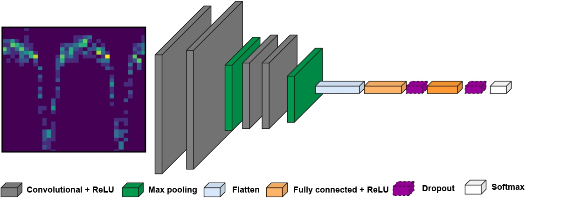
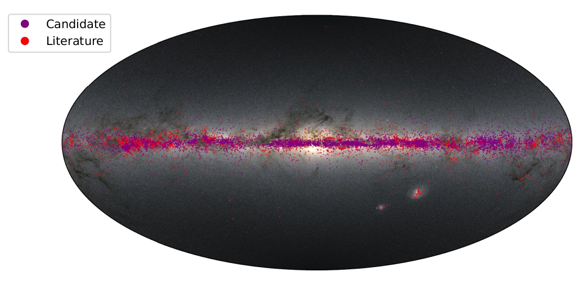

My Research
My research has been focused, on one side, on photometric stellar variability, particularly periodic variable stars. Through these studies, we can unveil fundamental astrophysical laws, such as the period-luminosity relation and test models of stellar structure and evolution. In preparation for upcoming multi-epoch photometric surveys and their spectroscopic counterparts (e.g., Vera Rubin and 4MOST), I have been working on the efficient classification of periodic variable stars in large datasets. On the other side, I am interested in massive stars, specifically eclipsing binaries. From these objects, we can estimate dynamical masses, constrain stellar evolution models and binary interaction products. In order to progress in the knowledge of the aforementioned areas, I have been training myself in the use of advanced data processing techniques such as machine learning, in particular deep learning techniques.
Stellar Variability
In this area, I developed a general framework to classify periodic variable stars and detect faulty periods efficiently. My deep learning algorithm distinguishes between seven types of variable stars, including Classical Cepheid, RR Lyrae, and Eclipsing Binaries. The model also identifies incorrect periods, essential for refining astrophysical relationships such as the period-luminosity law. The algorithm achieves high accuracy while significantly improving computational efficiency.

Massive Stars
My second research focus is on massive stars. I have extended the Hot Luminous OBA star candidate catalog using Gaia DR3 data and developed a balanced random forest algorithm to identify O and early B-type stars. Our new sample, limited to stars with G < 12 magnitude, doubles the known number of massive stars. Additionally, we implemented an automated method for detecting spectral lines and calculating equivalent widths (EW) from large-scale spectral datasets such as LAMOST.
